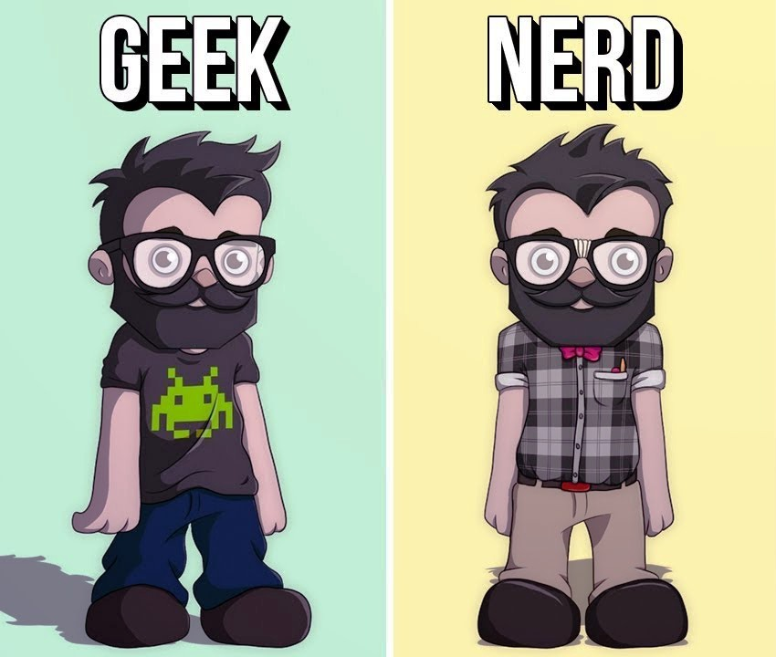
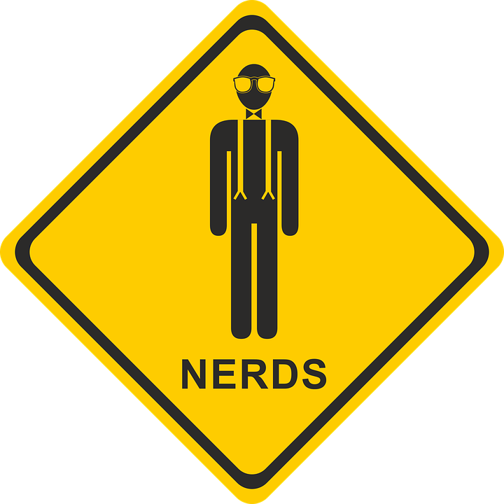

Você é Geek ou Nerd?

Quais são as diferenças entre os 2 termos
Hoje em dia, virou moda todo mundo dizer que é nerd, geek, hipster e outras denominações que ganharam força com o avanço da internet. No caso dos geeks e nerds, ambos os grupos são confundidos constantemente, e muitas pessoas até acham que os dois são
a mesma coisa, talvez pela aparência ou gostos pessoais, que são semelhantes.
Mas tenho uma notícia para você: nerds e geeks, na teoria, não são a mesma coisa. E digo mais: os dois perfis são completamente diferentes um do
outro. Não entendeu? Pois no infográfico abaixo, desenvolvido pelo site Masters In IT (especializado em levantar análises relacionadas a informações tecnológicas), você vai perceber que, de fato, existe um abismo entre um nerd e um geek de
verdade.

Os Nerds
O termo "nerd" foi concebido em 1954 por Theodor Seuss, escritor, poeta e cartunista americano, mais conhecido como Dr. Seuss, que fez uma associação entre a lerdeza e peças de roupa listradas (nas cores branca e azul) para pessoas magras. Basicamente,
um nerd é um personagem cômico, geralmente magrelo, e com alguns problemas cognitivos para determinados assuntos.
Os traços de um nerd incluem diversas características. Entre elas: interesse extremo e obsessivo com livros e
estudos, introversão, dificuldade para se relacionar socialmente; e diversas habilidades mais desenvolvidas devido ao gosto por games, filmes, ciência e computadores. Alguns itens podem incluir o seriado Battlestar Galactica (BSG), Live Action
(na maioria para jogos de RPG), SecondLife, xadrez, fantasia e ficcção científica, programação de PCs e física.
Quanto aos empregos, os nerds costumam se tornar profissionais como cientistas de foguetes, professores particulares, programadores,
engenheiros, TI, inventores ou trabalhar em uma loja de vídeo - muitas vezes visto em alguns seriados de televisão. E claro: quando se fala de "coração", é natural que os nerds namorem com outros nerds.
Os assuntos mais falados entre os
nerds - que parecem se reconhecer de longe! - envolvem conversas um tanto... esquisitas. Como "Existem 2 tipos de pessoas no mundo: aquelas que entendem binário e as que não entendem". Ou "Eu adoraria mudar o mundo, mas ele ainda não me deu
o código fonte". Ou ainda "A caixa dizia que era necessário ter um Windows 95 ou uma versão mais atual. Então, instalei o LINUX". Entendeu?
E filmes? Bem, tratando-se dos nerds, os preferidos deles são: "Senhor dos Anéis", "Pi", "Battlestar
Galactica" - que só será lançado em 2013 -, "Star Trek" e Matrix.
Os Geeks
Diferente da palavra "nerd", a denominação de geek ganhou força, por incrível que pareça, no circo e nas ruas! Os acrobatas, trapezistas e outros artistas performáticos eram popularmente chamados de Geeks pelos locais em que se apresentavam. Posteriormente,
passou-se a designar como "computer geek" aquele que ganha a vida resolvendo bugs de computador.
Mas, o primeiro registro da palavra apareceu em 1976, como sinônimo de "fool" (bobo). Só que a expressão só adquiriu definições
mais positivas na década de 1990, quando a tecnologia ganhou status de poder libertador. Hoje, o termo é mais específico: geeks são aqueles que se atraem por tudo aquilo que é novidade, principalmente quando o assunto são computadores.
Os traços de um geek são mais centrados que os de um nerd. Eles possuem interesses e estilos de vida mais específicos e se tornam experts naquilo que gostam, mas não se enganem, pois muitas vezes, podem se mostrar pretensiosos e cansativos.
Seus gostos pessoais incluem videogames, filmes, colecionar objetos, paixão por gadgets e tecnologia, computação, códigos, hacks, música eletrônica, entre outros. Além disso, costumam usar camisetas com frases irônicas e engraçadas.
As
profissões mais escolhidas pelos geeks podem ser: web designer/desenvolvedor, TI, designer gráfico, designer/desenvolvedor de jogos, marketer, empresário, dono de uma loja de discos, bartender ou até barista em uma loja de café indie - que
os hipsters de plantão com certeza vão saber de quais estou falando. Quanto a namoro, os geeks podem se relacionar tanto com pessoas do mesmo grupo como também os menos fãs da área.
E os assuntos? No geral, geeks são reconhecidos quando
começam a falar sobre os próprios estilos de vida, e discussões que envolvem hábitos "legais" ou referências da cultura pop. Frases como "Não há nada melhor do que sentir o cheiro de um autêntico perfume Malbec" ou "[Enquanto tira o iPhone
do bolso] Deixe-me mostrar meu iPad portátil".
Geeks vs Nerds
De acordo com a pesquisa mostrada no infográfico, 87% das pessoas em todo o mundo são mais adeptas aos geeks do que aos nerds. Além disso, 66% acreditam que "ser geek" é um complemento e 31% acreditam que os geeks possuem grandes chances de serem bem
sucedidos no que fazem. E se você acha isso pouco, fique atento: 23% não se importam de ser chamados de hipster, contra 41% daqueles que se sentem bem com o termo "geek".
41% das pessoas se sentem mais confortáveis ao serem
chamadas de geek, contra 24% das que preferem de nerds. Já no quesito "cognição', 59% dos geeks são mais inteligentes do que aqueles que não são (43%), 48% se mostram obsessivos com certos aspectos da cultura pop - contra 29% dos não-geeks
-, e 47% têm mais chances de se dar bem profissionalmente do que as outras pessoas (28%).
O único quesito em desvantagem é o da interação social, pois 34% desse "biotipo" têm algum tipo de distúrbio nesse universo.
O infográfico completo
pode ser visto aqui. E você, quem acha que ganha essa batalha: os geeks ou os nerds? Depois de ler todas essas informações, em qual grupo acha que se encaixa mais?
Fonte Referência
Você é do Universo Geek e não sabe o que é?
O conceito de geek é algo parecido ao conceito de nerd: aquela pessoa que tem um profundo interesse por assuntos científicos e tecnológicos, gosta de estudar, é muito inteligente e às vezes é pouco sociável. Geek, é uma gíria da língua inglesa
cujo significado é alguém viciado em tecnologia, em computadores e internet. Mas, e aí está se identificando? Se encontrou em alguma definição? Irei continuar a falar sobre esse Universo. A subcultura geek se caracteriza como um estilo de
vida, no qual os indivíduos se interessam por tudo que está relacionado à tecnologia e eletrônica. Gostam de filmes de ficção científica (Star Wars, Star Trek e outros), são fanáticos por jogos eletrônicos e jogos de tabuleiro. Os geeks também
sabem desenvolver softwares em várias linguagens de programação e, na escola, se destacam dos outros colegas pelos conhecimentos demonstrados. Se identificou agora? Caso ainda esteja duvidando, faça o nosso Quiz.
Eventos Geek
CCXP
A CCXP, ou Comic Con Experience, segue o formato de outras Comic-Com, antes eram convenções de quadrinhos, que existem ao redor ao mundo(quadrinho, esse mundo), porém é um evento de entretenimento, com a essência. Por isso, a feira reúne apaixonados
por HQs, livros, filmes, séries e games. Sim, é o lugar para quem gosta de Harry Potter, Game of Thrones, Turma da Mônica, Cavaleiros do Zodíaco, Marvel, Star Wars, Transformers, X-Men, ama jogos de tabuleiros e de videogames e muito mais.
BGS
A BGS, ou Brasil Game Show, é considerada a maior feira de games da América Latina e maior do mundo em público e área. Agora em 2019, o evento chega à 12ª edição e coloca o gamer como protagonista. A BGS, foi realizada pela primeira vez em 2009,
inicialmente como Rio Game Show, na capital fluminense, a BGS atualmente ocupa todos os pavilhões do ExpoCenter Norte, em São Paulo. Além disso, reúne as principais empresas do universo Geek em estúdios, essa feira é palco de grandes lançamentos,
abre espaço para estúdios independentes e atrai personalidades da indústria mundial de jogos eletrônicos.
Peter Jordan

Peter Jordan é apresentador do Ei Nerd, posta vídeos de reacts, vlogs e bastidores de filmagens no canal Peter Aqui e é criador do Acredite ou não. É responsável pelos conteúdos dos canais que viralizaram com vídeos como Cenas Proibidas do Dragon
Ball Z.
Jordan é do Rio de Janeiro e morou com a esposa Andreza e seus dois filhos nos Estados Unidos de 2015 a 2019, quando retornou ao Brasil. Além de youtuber, Peter é empresário e dono da Petaxxon, a desenvolvedora que criou os sites Letras e Cifras
e tem sede no Brasil e Estados Unidos. Ele também é autor do Almanaque Ei, Nerd, publicado em novembro de 2017. A Petaxxon é uma empresa de inovação, responsável por alguns dos maiores sites de música do Brasil, desde 2001.
Peter afirma: "Somos os criadores de grandes sucessos de entretenimento da internet nacional e internacional. Foi com muita vontade de inovar que entramos no mundo online. Lançamos o site Cifras em meados de 2003 com ferramentas inéditas na internet
e, até hoje, a cada site e canal lançados no youtube, costumamos criar tendências, modéstia à parte ;)."
Desde 2015, a Petaxxon mantém o primeiro escritório fora do país, nos Estados Unidos, com o objetivo de atender melhor nosso público internacional e de aumentar nossa presença no mercado mundial, que não para de crescer. Podem chamar do que quiser:
de digital, online, web, internet, virtual e até de nuvem! Gostamos mesmo é de estar sempre conectado com nosso público. link para o site da empresa do Peter
www.petaxxon.com.br.
O youtuber Peter Jordan, criador do canal Ei Nerd, tem um título de peso: é um dos maiores produtores de conteúdos geeks no Brasil. Com 8,5 milhões de seguidores, ele produz vídeos sobre filmes de heróis, HQs, animes e mangás. Quase todos esses
produtos sempre superam a marca de 1 milhão de views. A visibilidade on-line tornou o rapaz uma verdadeira celebridade em eventos nerds.
Confira a entrevista de Peter Jordan:
1-Fale um pouco sobre você e sobre seu trabalho no Cifras.com.br.
O que começou com uma brincadeira em 1998 hoje se torna um meio de vida. Ao apostar numa idéia inovadora consegui dar inicio a um projeto de sucesso. O Cifras nasceu com ferramentas 100% originais e mudou a “cara” dos sites de cifras na internet.
Veja que hoje um site de cifras com desenhos de acordes e mudança de tonalidade são itens fundamentais para atrair o visitante. O site hoje é uma referência para aspirantes a músicos e nosso foco é manter a qualidade do material que nos é
enviado entre cifras e tablaturas e sempre que podemos criamos novas ferramentas para facilitar a navegação e o aprendizado do internauta.
2 – Depois de ganhar 4 troféus iBests, você se tornou conhecido na internet e entrou para o seleto ranking de grandes webmasters, como é o dia a dia do trabalho de um webmaster?
Se eu pudesse resumir sua pergunta em uma só palavra ela seria “criação”. Eu concentro meu trabalho no desenvolvimento de novos projetos sejam eles novos portais, novas seções internas ou até novas funcionalidades para os sites da nossa rede.
Até o momento em que esse trabalho é disponibilizado ao internauta ficamos muito ansiosos. Para nós a aceitação do usuário é muito gratificante e o que nos prestigia. O Ibest foi uma consequência do nosso gosto pelo trabalho e tudo isso junto
é uma receita que nos motiva a querer ser cada vez mais perfeccionistas. Quem ganha com isso é o internauta.
3 – O Cifras.com.br possui versão em inglês e também em espanhol, o que você pensa do mercado de internet fora do Brasil?
Quando o Cifras nasceu no Brasil em 2003 nenhum outro site em toda a internet tinha as funcionalidades de mostrar os desenhos de acordes e poder trocar o tom da música. Não demorou muito e outros sites de cifras “importaram” nossa idéia. A aceitação
do internauta foi instantânea e resolvemos criar uma versão do site em inglês. E assim como aconteceu com o Cifras aconteceu igual em nossa versão Tio Sam. Hoje o site E-Chords.com é um grande sucesso não só para o público americano como em
diversas outras partes do mundo. Isso se reflete em acessos e em grandes parcerias. Antes de iniciar uma versão do site em outra língua procuramos estudar muito a concorrência local para oferecer aos internautas uma experiência nova em navegação.
Foi exatamente isso que fizemos ao criar o LosAcordes.com, a versão “los hermanos” do Cifras. O site teve uma rápida ascenção em acessos e hoje as transcrições enviadas dos 3 sites vão para a mesma base de dados deixando nosso acervo o mais
eclético possível. Temos ainda projetos para traduzir o site para outras linguas mas isso fica para um outro momento.
4 – Como é o trabalho de manutenção dos servidores de um site do porte do Cifras.com.br?
Posso dizer que já “apanhamos” muito na ocasião em que migramos de share hosting para servidor dedicado. Minha experiência profissional é como desenvolvedor e tinha muito pouco conhecimento de configuração de servidores e aplicativos. Mas fomos
adquirindo essa experiência ao longo do tempo e hoje conseguimos contornar todos os problemas que o site tinha por conta da hospedagem. Basicamente investimos em hardware pesado e distribuimos o site em 4 servidores distintos, 2 para web 2
para banco de dados. Temos programas de monitoramente rodando nos servidores e schedules diários de limpeza e otimização. Com certeza hoje, com tantos sofwares dedicados a manutenção, sobra mais tempo para criação.
5 – Existem alguns boatos sobre um novo portal que você está criando, você pode nos contar que projeto é esse?
Sim posso. Da mesma forma que acreditamos no Cifras e investimos num domínio forte fizemos o mesmo com esse novo portal. Ainda seguindo o tema música, o novo portal será o Letras.com.br. Mas não basta apenas um bom domínio para se ter êxito na
internet, temos que ter diferenciais. Ao se perguntar o que mais um site de letras pode ser diferente não temos muitas respostas e isso se torna um grande desafio. Pretendemos no novo site não apenas oferecer uma forma de encontrar letras
de músicas mas interagir com a comunidade através da música e utilizando conceitos do open social. Queremos unir o internauta através do gosto musical e proporcionar uma experiência musical de descobertas e surpresas.
6 – Sobre sua equipe, como é formado os profissionais e pessoas que trabalham com você?
O site começou comigo, minha mulher e meu irmão. Ainda trabalhamos os três juntos mas a demanda cresceu e tivemos que expandir. Como trabalhamos com desenvolvimento e gerenciamento de portais de internet damos preferência aos profissionais que
apresentam um portfólio publicado online. Não nos focamos muito em diplomas ou cursos. Acho que o trabalho na internet é construído através da vivência. Aliás assim como foi o meu. Não adianta ter um webdesigner profissional com diploma mas
que não sabe combinar as cores. Nossa equipe é formada por profissionais de internet com grande experiência na área de TI, muitos deles também webmasters e gerenciando seus próprios portais, e referências em suas respectivas áreas, diga-se
de passagem (risos).
7 – Que ferramentas e tecnologias são utilizadas em seus projetos?
Cada projeto possui sua particularidade e necessidade de ferramentas e tecnologias. As ferramentas mais utilizadas são Visual Studio .NET, Adobe Dreamweaver e Visual Interdev, Aptana Studio para desenvolvimento. As tecnologias mais utilizadas
são: ASP, ASP.NET, mySQL, Flash Media Server, Ajax, entre outras.
8 – Que dica você pode dar para quem quer ganhar dinheiro com o próprio site?
A melhor dica é nunca criar o site pensando em ganhar dinheiro. Crie o seu site a partir de uma grande idéia, procure não copiar algo que já exista. Se você vai encontrar sites similares tenha seus diferenciais e faça deles seu trunfo para atrair
os visitantes.
9 – Finalizando, quais são suas perspectivas profissionais para o futuro?
Estamos muito ansiosos por lançar o Letras.com.br e atualmente é onde estão depositadas nossas apostas. Esperamos unir nossos portais em uma grande rede de música. Temos novos projetos para o ano de 2009 para agregar a nossa rede e todos voltados
na área musical.
Fonte Referência